全国中小学生学籍管理系统操作指南
作者：TeliuTe 来源：基础教程网
九、转学、休学、复学 返回目录 下一课学籍异动申请包括学生的省内转学，休学、复学，其他离校、恢复入学资格等学籍变动，也可以查询已完成、正在处理和驳回的申请；
1、转学
1）点“学籍管理－日常管理－学籍异动申请”，在右边的面板中的点“申请”按钮，这里也可以查询已完成和正在处理的异动申请；
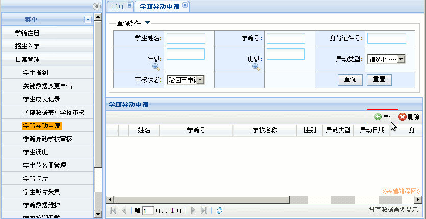
2）首先查询学生所在的学校，点“学校名称”文本框，出来一个学校查询对话框，只能查省内的学校；
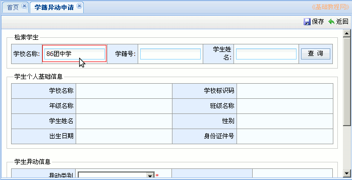
3）输入学校的名称，可以输入部分名称，点右边的“查询”，再在结果列表中选择学校，点“选择”按钮返回；
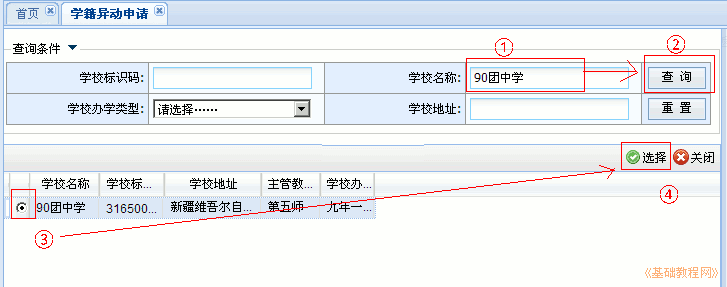
4）再输入学生的姓名或学籍号，点“查询”按钮，搜索出学生的基础信息，点下边的“异动类别”下拉列表；
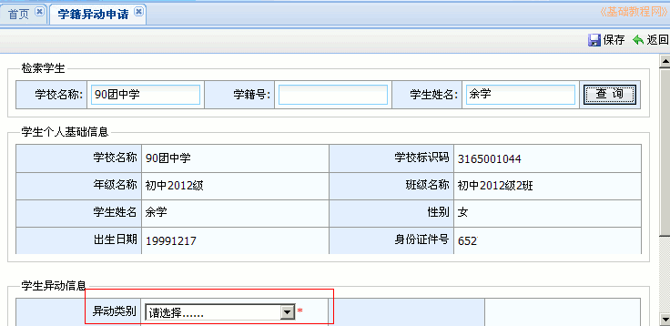
5）在异动类别中选择“转学”，点选异动日期，输入异动说明，选择转学后的班号，点右上角“保存”按钮；
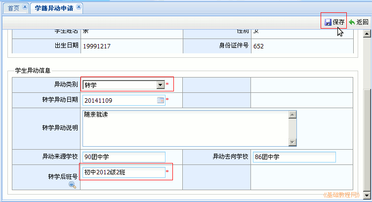
6）在提示是否上传证明材料，点“是”，再点“浏览”按钮，打开学生的“转学申请表”照片，点“确定”完成申请；
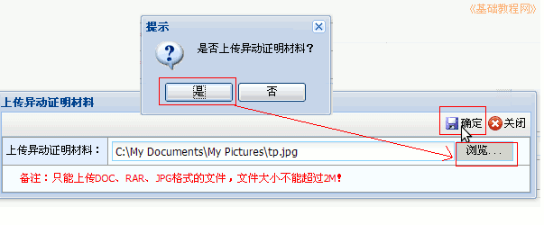
7）再在左侧栏点击“学籍异动学校审核”，右边的当前未审核中，选中学生，点“审核”按钮；
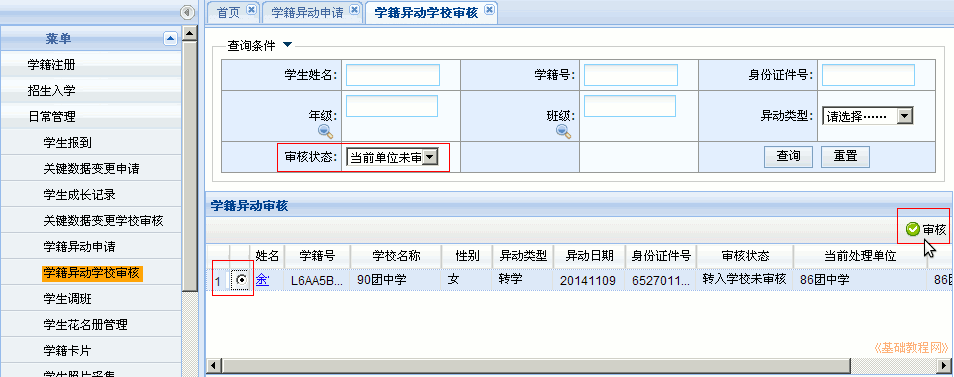
8）在下边审核意见选择“同意”，点右上角“确定”即可完成上报，等待上一级主管审核通过；
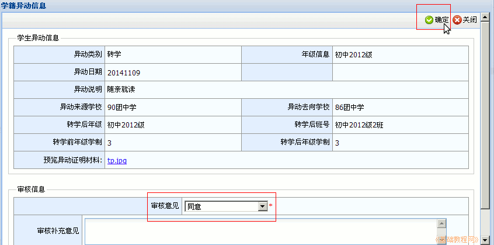
9）休学和转学类似，休学除了休学申请表以外还需要，医院等其他医疗证明材料，学生返校后，办理复学申请；
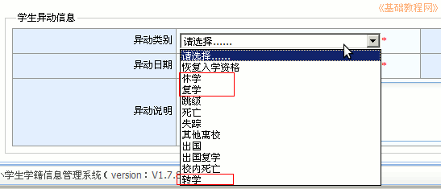
10）申请没有通过，驳回的记录在异动申请页面，选择审核状态为“驳回至申请学校”，然后点“查询”可以查到；
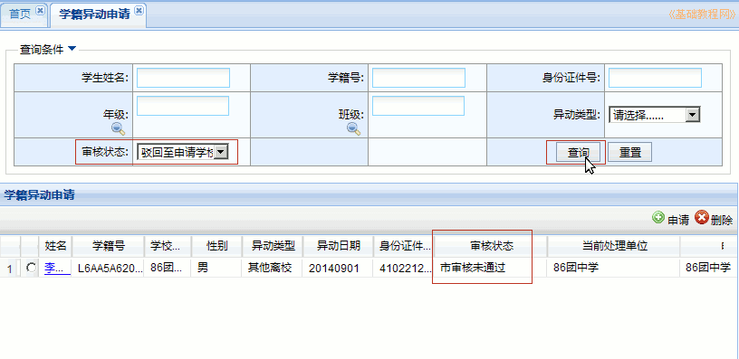
11）点击列表中学生姓名蓝色链接，可以查看审核信息中，不通过的原因；
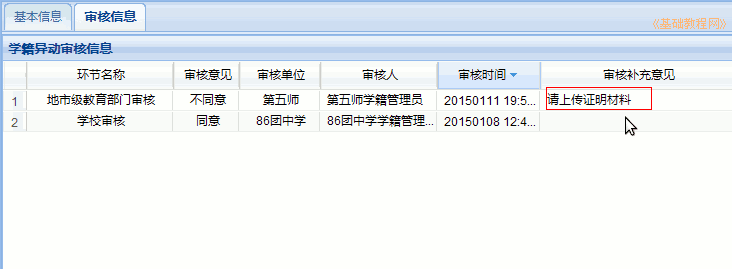
本节学习了转学、休学、复学的基础知识，如果你成功地完成了练习，请继续学习下一课内容；
本教程由TeliuTe制作|著作权所有
基础教程网：http://teliute.org/
美丽的校园……
转载和引用本站内容，请保留作者和本站链接。